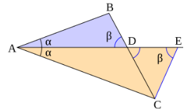
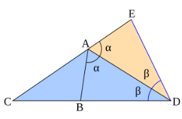

En un triángulo ABC, si AD es la bisectriz del ángulo  e interseca al lado BC en el punto D, entonces:
AB / AC = BD / DC
Es decir, la bisectriz de un ángulo divide el lado opuesto en partes proporcionales a los lados adyacentes.
Dado un triángulo ABC y una bisectriz AD, al construir el triángulo isósceles CDE, CD = CE, se tiene una semejanza entre los triángulos ABD y ACE, quedando así demostrada la relación de proporcionalidad de los triángulos iniciales:
AB / AC = BD / CE = BD / CD
Dado un triángulo ABC y una bisectriz AD del ángulo exterior en el vértice A, al construir un triángulo ADE igual al triángulo ADB se tiene la posición anterior para la bisectriz interior demostrada antes:
AB / AC = AE / AC = ED / CD = BD / CD
Por tanto, queda probado el teorema para las dos bisectrices.
En todo triángulo rectángulo, el cuadrado de la hipotenusa (el lado opuesto al ángulo recto) es igual a la suma de los cuadrados de los catetos (los otros dos lados).
Fórmula: c2 = a2 + b2
Consideremos un triángulo rectángulo con catetos a y b, e hipotenusa c. Construimos un cuadrado grande de lado (a + b), dentro del cual colocamos cuatro copias del triángulo de modo que se forma un cuadrado más pequeño de lado c en el centro.
El área total del cuadrado grande es:
(a + b)2 = a2 + 2ab + b2
También es igual al área del cuadrado pequeño (c2) más el área de los cuatro triángulos:
c2 + 4((1/2)ab) = c2 + 2ab
Igualando ambas expresiones:
a2 + 2ab + b2 = c2 + 2ab
Restando 2ab a ambos lados:
a2 + b2 = c2
Este resultado demuestra el Teorema de Pitágoras.
Haz 2 clics para definir un segmento AB. Se generará automáticamente un triángulo rectángulo con ángulo recto en A.
Haz 3 clicks: los dos primeros definen una recta, el tercero será el punto al que se medirá la distancia desde el punto medio.